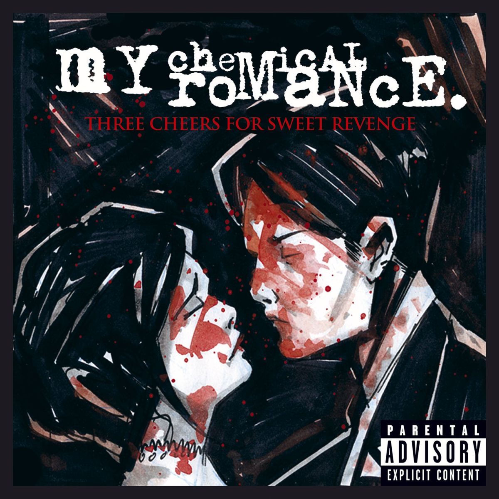
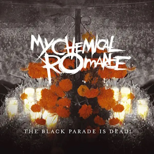

This website is created and submitted to Mr. Cadano, in partial fulfillment for the requirements in the subject "Introduction to Computing".
This website is for educational purposes only. All music, images, and information belong to their respective owners. This website is not affiliated with or endorsed by any of the artists or organizations featured.
ABOUT ME
Hi! I'm Merl, a first-year Computer Science student at the Pamantasan ng Lungsod ng Maynila.
I have zero knowledge at coding, but I have a dream and I want to be rich.
I hope you like my work!
CLICK TO NAVIGATE
The Ghost of You
Song By: My Chemical Romance

LYRICS
I never
Said I'd lie and wait forever
If I died
We'd be together
I can't always just forget her
But she could try
At the end of the world
Or the last thing I see
You are never coming home, never coming home
Could I? Should I?
And all the things that you never ever told me
And all the smiles that are ever, ever...
Ever get the feeling that you're never all alone?
And I remember now
At the top of my lungs in my arms she dies
She dies
At the end of the world
Or the last thing I see
You are never coming home, never coming home
Could I? Should I?
And all the things that you never ever told me
And all the smiles that are ever gonna haunt me
Never coming home, never coming home
Could I? Should I?
And all the wounds that are ever gonna scar me
For all the ghosts that are never gonna catch me
If I fall
If I fall
(Down)
At the end of the world
Or the last thing I see
You are never coming home, never coming home
Never coming home, never coming home
And all the things that you never ever told me
And all the smiles that are ever gonna haunt me
Never coming home, never coming home
Could I? Should I?
And all the wounds that are ever gonna scar me
For all the ghosts that are never gonna
MEANING
The Ghost Of You is a single originally recorded for My Chemical Romance's second album,
Three Cheers For Sweet Revenge. It was featured on the album as the sixth track and was the fourth single
to be released. The single was re-released as a B-Side on 17 January 2011.
The Ghost Of You portrays the thoughts and feelings of somebody that recently lost someone.
The lyric "... never coming home" speaks of someone that has been away, possibly at war, as the music video suggests.
Danger Days: The True Lives of the Fabulous Killjoys
I Brought You My Bullets, You Brought Me Your Love

The Black Parade Is Dead!
In The End
Song By: Linkin Park
LYRICS
It starts with one
One thing, I don't know why
It doesn't even matter how hard you try
Keep that in mind, I designed this rhyme to explain in due time
All I know, time is a valuable thing
Watch it fly by as the pendulum swings
Watch it count down to the end of the day, the clock ticks life away
It's so unreal, didn't look out below
Watch the time go right out the window
Tryna hold on, d-didn't even know
I wasted it all just to watch you go
I kept everything inside
And even though I tried, it all fell apart
What it meant to me will eventually be a memory of a time when
I tried so hard, and got so far
But in the end, it doesn't even matter
I had to fall to lose it all
But in the end, it doesn't even matter
One thing, I don't know why
It doesn't even matter how hard you try
Keep that in mind, I designed this rhyme to remind myself how I tried so hard
In spite of the way you were mockin' me, actin' like I was part of your property
Rememberin' all the times you fought with me
I'm surprised it got so far
Things aren't the way they were before
You wouldn't even recognize me anymore
Not that you knew me back then, but it all comes back to me in the end
You kept everything inside
And even though I tried, it all fell apart
What it meant to me will eventually be a memory of a time when
(repeat)
I've put my trust in you
Pushed as far as I can go
For all this, there's only one thing you should know
I've put my trust in you
Pushed as far as I can go
For all this, there's only one thing you should know
(repeat)
MEANING
In the End explores the bitter frustration of putting immense effort, trust, and time into
something—whether a failing relationship or a personal struggle—only to watch it completely fall apart.
Co-writer Mike Shinoda noted that the track captures a sense of hopelessness and the rapid, unstoppable
passage of time without offering easy answers.
The moment that I feel like you're a devil
You turn into an angel and comfort me
After pushing me off the cliff
You save me by stretching out your hand
Your feast made with my heart (Hel,l yeah)
Endless spread of salty and sweet (Hel,l yeah)
Addictive so that I keep on asking for you (Coldly)
You say while smiling "You're eating well"
You return me to the beginning no matter how much I run
Reverse me back if I try to resist
The sentence that you've engraved in my head
You're the only one for me
You keep making me give up on giving up on you
This world always gives me love and fear
I admit, I am weak, I am rather happy still being bound by you
Please, please let me give you smile and tear
This pounding in my heart I feel right now
Is it a flutter or a fear (In my mind)
This breath I exhale toward you
Is it a relief or a lament (Don't know why)
I see myself falling in deeper as I'm trying to escape
The only part on the beginning of this love is vanishing
The sentence that you've engraved in my head
Only you can control me
(repeat)
Bring it on, on and on
Stir it up more, left and right
Not enough, I need your love
Make me yearn more (Day and night)
(repeat)
MEANING
Xdinary Heroes explores the toxic, addictive duality of a destructive relationship.
The lyrics describe a dynamic where a partner alternates between hurting and comforting the narrator,
creating an emotional trap that is hard to escape.
How can you see into my eyes
Like open doors?
Leading you down into my core
Where I've become so numb
Without a soul (Oh)
My spirit sleeping somewhere cold
Until you find it there
And lead it back home
(Wake me up) Wake me up inside
(I can't wake up) Wake me up inside
(Save me) Call my name and save me from the dark
(Wake me up) Bid my blood to run
(I can't wake up) Before I come undone
(Save me) Save me from the nothing I've become
Now that I know what I'm without
You can't just leave me (No)
Breathe into me and make me real
Bring (Bring) me (Me) to life
(repeat)
Bring me to life
I've been livin' a lie
There's nothing inside
Bring me to life
Frozen inside (Frozen inside)
Without your touch (Without your love), without your love
Darling, only you (Only you)
Are the life among the dead
All this time, I can't believe I couldn't see
Kept in the dark, but you were there in front of me
I've been sleeping a thousand years, it seems
Got to open my eyes to everything
Without a thought, without a voice, without a soul
Don't let me die here, there must be something more
Bring me to life
(repeat)
Bring me to life
I've been livin' a lie (Bring me to life)
There's nothing inside
Bring me to life
MEANING
"Bring Me to Life" by Evanescence is about waking up from emotional numbness and realizing a larger world exists beyond a dark, isolated state.
The lyrics describe feeling frozen, dead inside, or asleep for years. The song is about an awakening where you finally feel alive again.
Singer Amy Lee wrote the track after a pivotal conversation with her long-time friend (and future husband)
Josh Hartzler. During a casual exchange, he asked her, "Are you happy?" Lee realized she was hiding in a
restrictive, unhappy situation and felt an instant jolt of clarity—like waking up from being numb.
Hello, I've waited here for you
Everlong
Tonight, I throw myself into
And out of the red, out of her head, she sang
Come down, and waste away with me
Down with me
Slow, how you wanted it to be
I'm over my head, out of her head, she sang
And I wonder
When I sing along with you
If everything could ever feel this real forever
If anything could ever be this good again
The only thing I'll ever ask of you
You gotta promise not to stop when I say when
She sang
Breathe out, so I can breathe you in
Hold you in
And now, I know you've always been
Out of your head, out of my head, I sang
(repeat)
And I wonder
If everything could ever feel this real forever
If anything could ever be this good again
The only thing I'll ever ask of you
You gotta promise not to stop when I say when
MEANING
Everlong is an intense love song about a profound, all-encompassing connection with someone.
Written by Dave Grohl during a difficult divorce in late 1996, the track captures the desperate hope for a love so pure and real that you wish it could last forever.


.png)